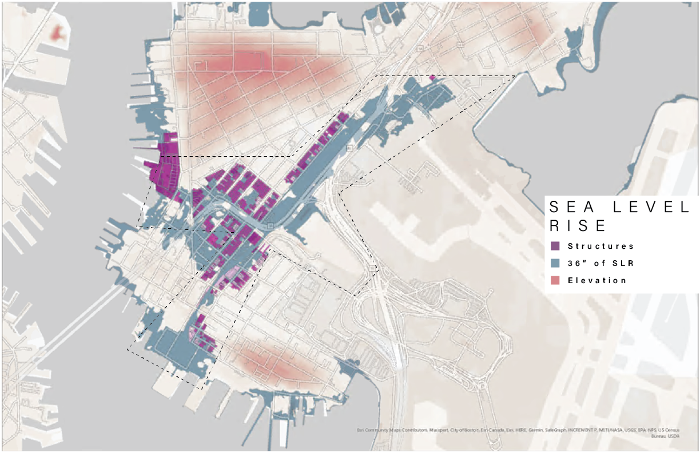
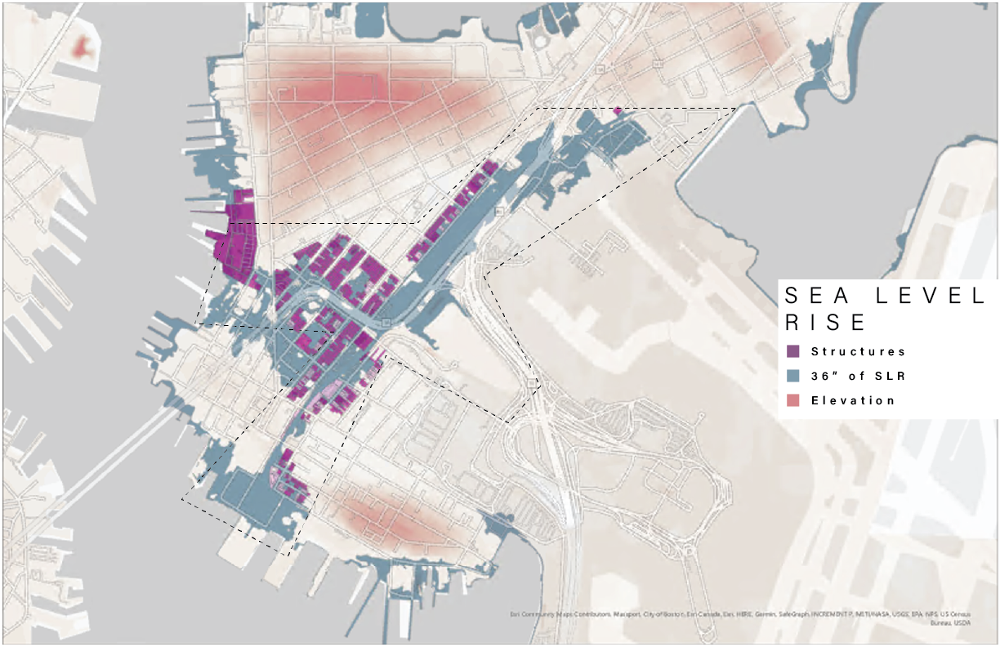

EMERALD PENDANT
The Emerald Pendant Canal will provide an immersive experience for the East Boston Community along with providing ecological services, and protection from rising sea-levels. By taking inaccessible areas throughout East Boston and transitioning the spatial use, it provides a new way to experience the area and learn about the processes taking place.
LOCATION
City of Boston; East Boston
PROJECT TYPE
Environmental Development; Climate Adaptation
SPONSOR
Northeastern University
CREATOR
Kyle Wire; M.Des Sustainable Urban Environments
The Emerald Pendant Canal will focus on restoring ecological functionality to the East Boston Neighborhood as well. By planting native species to the area, this will aim to restore biodiversity, address the urban heat island effect, and act as a stormwater management system. We can also expect to see cleaner air, cleaner water and an overall increase in the general health of residents.


Boston is facing a new challenge in the face of rising sea-levels. By 2030, the city is expecting an increase of 8 inches in relation to 2000 and 3 feet by 2070. The inundation of East Boston would put as many as 1,182 homes, 116 commercial businesses and 6 industrial sites at risk, potentially leading to displacement (within the study area).
The City of Boston is focused on solutions revolved around raising streets, creating berms and using aqua-barriers, however, these solutions are only temporary.

 

When we consider that East Boston was previously comprised of five islands and where the projected flooding will occur, it points to the solution to let water in, to return to the geological history. Through the introduction of a canal system, we can control the flooding, rather than deflect it.
THE CANAL